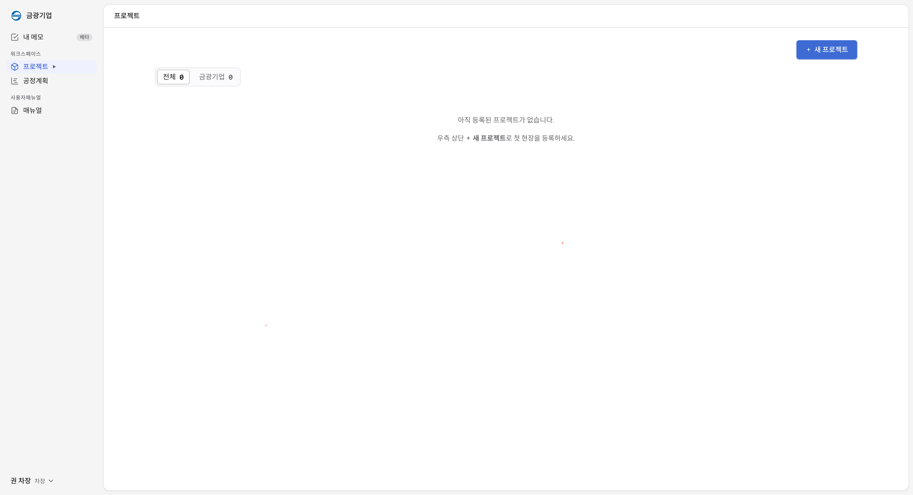
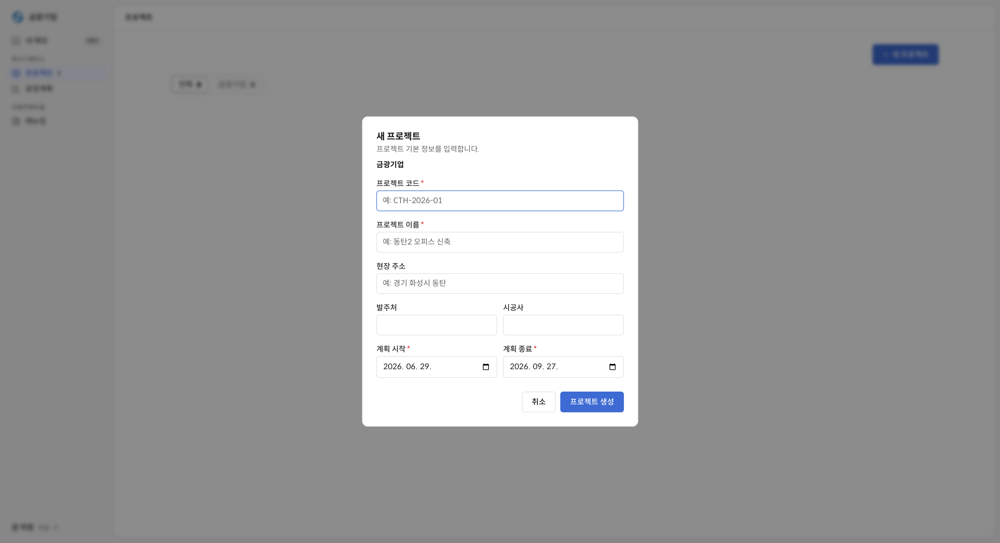
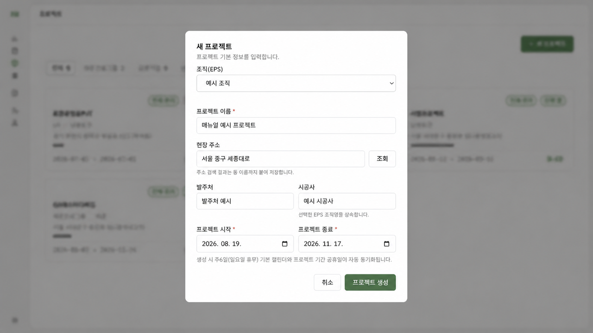
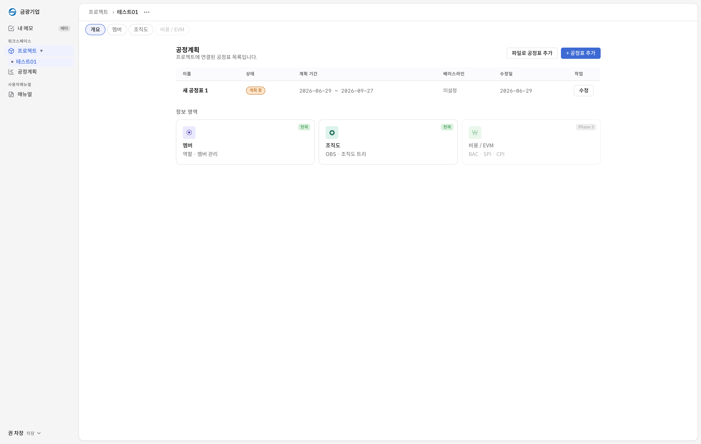
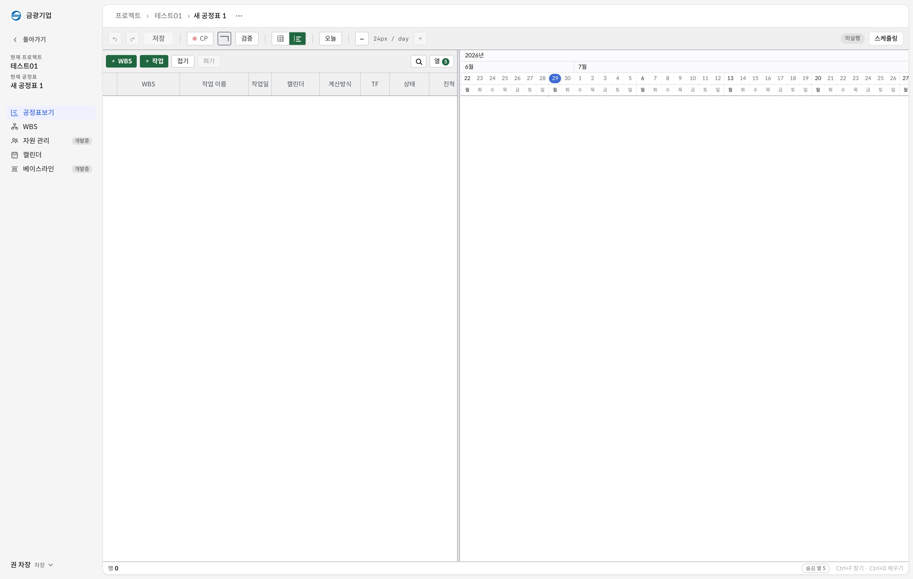
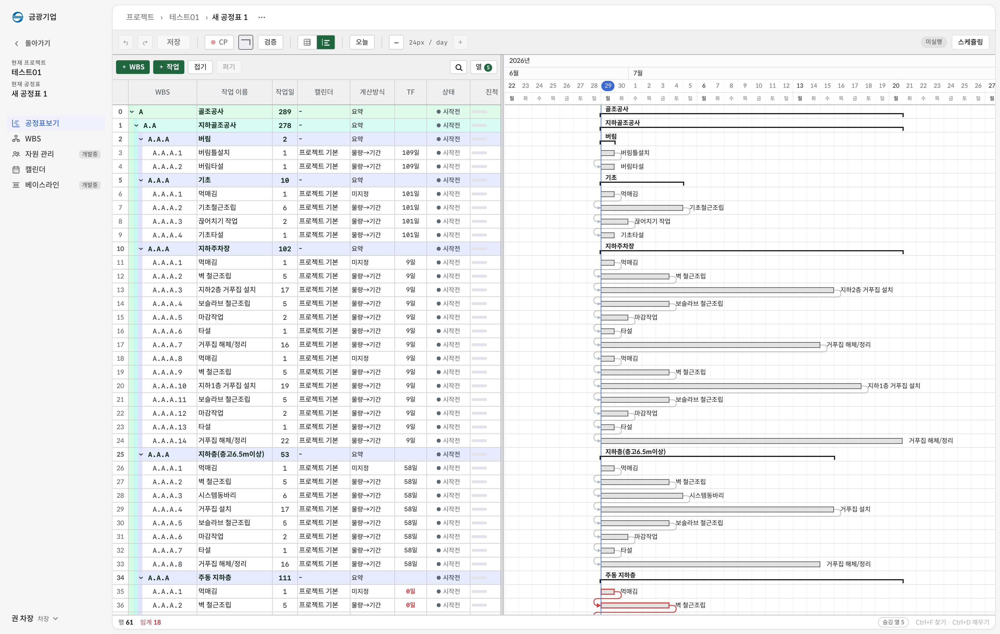
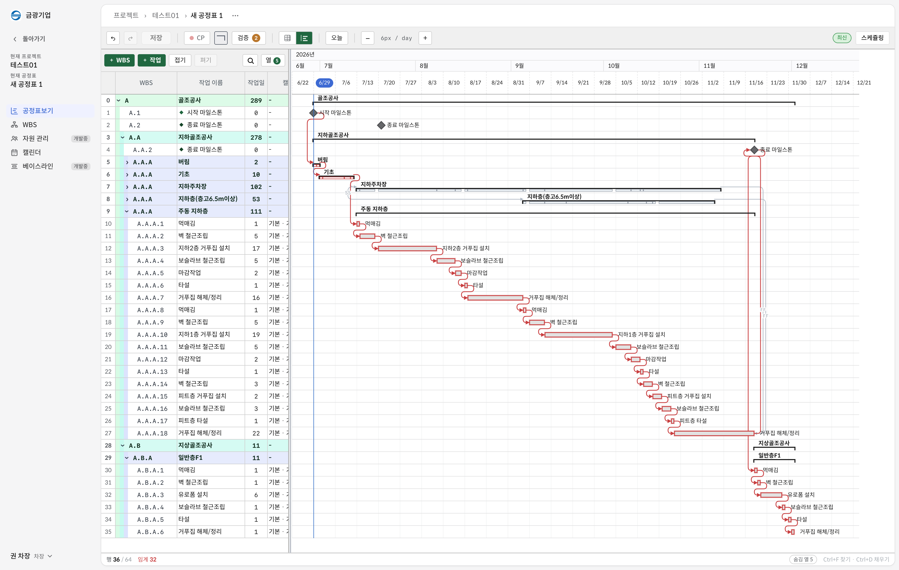

1화면구성 기본
Contech-X는 상단 작업 메뉴, 좌측 프로젝트/공정 탐색, 중앙 작업 영역, 우측 보조 패널을 기준으로 사용합니다. 처음에는 현재 선택한 프로젝트와 공정표가 어디인지 확인한 뒤 작업을 시작합니다.

주요 영역
내 메모
개인 작업 메모를 남겨 화면 전환 후에도 확인합니다.
워크스페이스
회사/프로젝트 맥락을 바꾸는 기준 영역입니다.
매뉴얼
기능 사용법을 별도 화면에서 확인합니다.
프로필
사용자 정보와 권한, 계정 메뉴를 확인합니다.

2EPS PRJ 구조
EPS는 프로젝트를 담는 상위 분류입니다. 그룹사 조직, 본부, 현장 같은 관리 단위를 먼저 정리하고 그 아래 프로젝트를 배치하면 공정표를 찾기 쉽습니다.

| 구분 | P6 | Contech-X |
|---|---|---|
| 공정표 구조 | 일반적으로 한 프로젝트에 하나의 공정표를 운용 | 한 프로젝트 안에서 여러 공정표를 함께 운용 |
| 활용 예 | 단일 기준 공정표 중심 관리 | 전체 공정, 동별 공정, 협력사 공정 등 멀티 공정표 관리 |
3프로젝트 및 공정표 생성
프로젝트 생성 및 멤버 추가
새 프로젝트는 프로젝트 코드, 프로젝트 이름, 현장 주소, 발주처/시공사, 계획 시작/종료일을 입력해 만듭니다. 생성 후 멤버를 추가해야 팀원이 프로젝트와 공정표를 함께 볼 수 있습니다.


공정표 생성
프로젝트 안에서 공정표를 추가합니다. 공정표명과 기준일을 명확히 쓰면 여러 공정표를 운용할 때 혼동을 줄일 수 있습니다.


4WBS 생성, WBS 노드 인터페이스
WBS 노드 인터페이스와 공정 라이브러리
WBS 노드는 공정표의 목차입니다. 노드를 먼저 만들고, 각 노드 아래에 실제 작업(Activity)을 배치하면 일정과 담당 범위가 명확해집니다.


스프레드시트 WBS
표 형태로 WBS와 작업을 빠르게 입력합니다. 엑셀처럼 행 단위로 복사, 수정, 정렬하기 좋습니다.

5작업간 관계설정
작업 관계는 선행 작업이 후속 작업에 어떤 영향을 주는지 정하는 규칙입니다. 관계가 정확해야 스케쥴링 결과도 믿을 수 있습니다.

| 관계 | 뜻 | 예시 |
|---|---|---|
| FS | Finish to Start. 선행 작업이 끝나야 후속 작업 시작 | 철근 배근 완료 후 콘크리트 타설 시작 |
| FF | Finish to Finish. 두 작업의 완료 시점이 연결 | 검측 완료와 보완 작업 완료를 같은 완료 기준으로 관리 |
| SS | Start to Start. 선행 작업이 시작되면 후속 작업도 시작 가능 | 먹매김 시작 후 자재 양중 준비 시작 |
6캘린더 설정
캘린더는 작업일과 휴무일을 정하는 기준입니다. 같은 기간 5일 작업과 6일 작업은 종료일이 달라지므로, Activity 성격에 맞는 캘린더를 지정해야 합니다.
- 현장 기본 작업일과 휴무일을 먼저 설정합니다.
- 특정 공종이나 작업 조건이 다르면 별도 캘린더를 만듭니다.
- Activity에 알맞은 캘린더를 지정합니다.
- 스케쥴링 후 종료일이 의도와 맞는지 검증합니다.
7스케쥴링 및 검증
스케쥴링은 작업 기간, 캘린더, 선후행 관계를 계산해 전체 일정표를 다시 배치하는 기능입니다. 관계가 누락되면 계산 결과가 실제 흐름과 달라질 수 있습니다.

Critical Path
프로젝트 종료일을 직접 결정하는 작업 흐름입니다.
Float / FT
전체 종료일을 늦추지 않고 작업이 움직일 수 있는 여유일입니다.
8베이스라인 개발중
베이스라인은 확정된 계획을 저장해 실제 진행과 비교하는 기준입니다. 계획 변경 전 기준선을 저장하면 이후 지연, 단축, 변경 영향을 볼 수 있습니다.
- 계획 공정표 작성 완료
- 검증 후 베이스라인 설정
- 실적 입력 후 계획 대비 차이 확인
9자원관리 개발중
자원관리는 작업에 필요한 인력, 장비, 자재를 연결해 투입 계획을 보는 기능입니다. 일정만 보는 공정표에서 한 단계 더 나아가 실제 수행 가능성을 확인합니다.
- 인력: 직종, 투입 인원, 투입 기간 관리
- 장비: 장비 종류, 사용 기간, 중복 투입 확인
- 자재: 필요 수량, 반입 시점, 작업 연결 관리
10작업(Activity) 상세기능
상세 작업설정 개발중
Activity별 작업명, 기간, 담당자, 캘린더, 관계, 자원 정보를 세부 설정합니다. 상세 정보가 정확할수록 스케쥴링과 실적 분석 품질이 좋아집니다.
필터링 기능 개발중
공종, 담당자, 기간, 지연 여부, Critical 여부 등 조건으로 작업을 좁혀 필요한 작업만 빠르게 확인합니다.
O/D 일수고정, 계산일수
O/D는 Original Duration, 최초 계획 기간입니다. 일수고정은 사용자가 입력한 기간을 유지하는 방식이고, 계산일수는 캘린더와 관계를 반영해 시스템이 산정하는 기간입니다.
11조직도 OBS 작성
OBS는 누가 어떤 업무를 담당하는지 정리하는 기준입니다. WBS가 작업의 구조라면, OBS는 책임의 구조입니다.
OBS 조직도 작성
- 프로젝트 조직 단위를 만듭니다.
- 부서, 협력사, 담당자를 계층으로 정리합니다.
- WBS 또는 Activity 담당자와 연결합니다.
담당자 권한 설정 개발중
담당자별 조회, 작성, 수정 권한을 나누어 프로젝트 정보를 안전하게 관리합니다.
12공정계획 개발중
공정계획 영역은 반복 사용 가능한 표준 데이터를 관리하는 곳입니다. 현장마다 같은 내용을 다시 만들지 않도록 라이브러리화합니다.
- 표준공정 라이브러리: 자주 쓰는 WBS와 Activity 묶음
- 자원 라이브러리: 인력, 장비, 자재 표준 목록
- 멀티 캘린더 라이브러리: 현장별 작업일 기준 템플릿
13PDF 출력 개발중
PDF 출력은 공정표, WBS, 주요 일정, 보고용 화면을 문서로 저장하는 기능입니다. 보고 대상에 따라 전체 공정표 또는 선택 구간만 출력할 수 있게 구성합니다.
14자원 실적입력 개발중
자원 실적입력은 계획 대비 실제 투입된 인력, 장비, 자재를 기록하는 기능입니다. 시간대별 투입 자원을 관리하면 생산성 분석과 비용 추적에 활용할 수 있습니다.
- 일자/시간대별 투입 인원 기록
- 장비 사용 시간 기록
- 자재 반입 및 사용량 기록